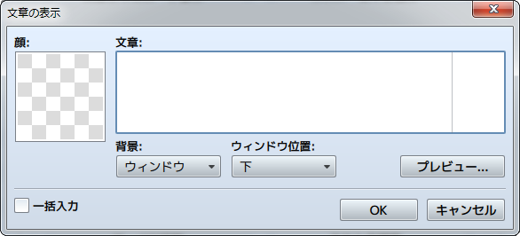
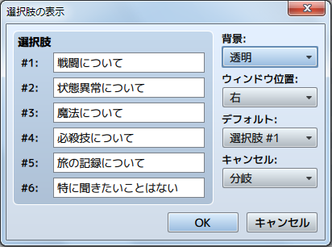
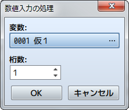
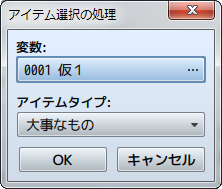
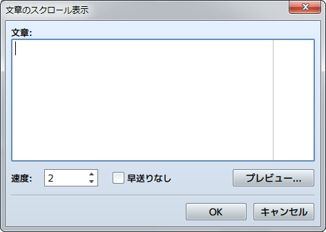

メッセージ
文章の表示

機能
メッセージウィンドウを開き、文章を表示します。
設定項目
- 顔
- メッセージウィンドウ内の左端に表示する顔画像を指定します。ダブルクリックすると表示される［画像の選択］のウィンドウで画像を指定します。
- 文章
- 表示する文章を入力します。1回につきメッセージウィンドウに4行までの文章を表示可能です。2行目以降に文字を表示するには［Enter］キーで改行します。
- 背景
- 文章を表示するメッセージウィンドウの形式を選択します。
- ウィンドウ位置
- メッセージウィンドウの表示位置を［下］［中］［上］のいずれかで指定します。
- プレビュー
- クリックすると文章の実際の表示を確認できます。
- 一括入力
- 有効にすると、一度に4行を超えて文章を入力できるようになります。4行を超える文章は、4行ごとに複数の［文章の表示］のイベントコマンドに分割したうえで実行内容のリストに設定されます。
備考
- 文章の入力中に［Ctrl］＋［Enter］のキーを押すと、［OK］ボタンをクリックしたときと同じ動作になります。
- ［文章］の欄の縦線はメッセージウィンドウに表示可能な文字数の目安を表します。文章が意図したとおりに表示されるかを［プレビュー］で確認しながら入力してください。
- 文章に制御文字を入力すると、変数の値やアクターの名前などを表示できます。制御文字と表示する内容は以下のとおりです。制御文字は必ず半角で入力してください。
| \V[n] | 変数n番の値に置き換えられます。 |
|---|---|
| \N[n] | アクターn番の名前に置き換えられます。 |
| \P[n] | パーティメンバーn番（並び順）の名前に置き換えられます。 |
| \G | 通貨単位の文字に置き換えられます。 |
| \C[n] | 以降の文字をn番の色で表示します。文字色は、システム画像［Window.png］の内容に準じます。 |
| \I[n] | アイコンn番を描画します。 |
| \{ | 文字サイズを1段階大きくします。 |
| \} | 文字サイズを1段階小さくします。 |
| \\ | バックスラッシュに置き換えられます。 |
| \$ | 所持金のウィンドウを開きます。 |
| \. | 文章の表示を1/4秒間停止します。 |
| \| | 文章の表示を1秒間停止します。 |
| \! | 文章の途中でボタンの入力待ちを行ないます。 |
| \> | 同じ行にある残りの文字を一瞬で表示します。 |
| \< | 文字を一瞬で表示する効果を取り消します。 |
| \^ | 文章表示後にボタン入力を待たないようにします。 |
※制御文字 \V,\N,\P,\G,\C,\I,\\ は、以下の場所でも使用できます。
選択肢の表示

機能
選択肢ウィンドウ（6択まで）を表示し、プレイヤーの選択に応じて処理を分岐させます。メッセージと同様に制御文字を使用することができます。
設定項目
- 選択肢（1～6）
- 選択肢の語句を指定します。表示しない選択肢は空白にします。
- 背景
- 選択肢の背景タイプを指定します。
- ウィンドウ位置
- 選択肢の画面上の表示位置を指定します。
- デフォルト
- カーソルの初期位置を指定します。
- キャンセル
- キャンセルボタンが押されたときの処理方法を指定します。
備考
- 設定項目を決定すると、［実行内容］にそれぞれの選択肢（キャンセルを含む）に対応する分岐が作られます。これらの分岐に、選択肢を選んだ後に実行する内容を設定します。
数値入力の処理

機能
数値の入力画面を表示し、プレイヤーが入力した値を変数に代入します。
設定項目
- 変数
- プレイヤーが入力した数値を代入する変数を指定します。
- 桁数
- 入力を受け付ける数値の桁数（1～8）を指定します。
アイテム選択の処理

機能
アイテムの選択ウィンドウを表示します。プレイヤーが選択したアイテムのIDを変数に代入します。
設定項目
- 変数
- プレイヤーが選択したアイテムの番号（アイテムID）を代入する変数を指定します。
- アイテムタイプ
- リストに表示するアイテムの種類を指定します。
文章のスクロール表示

機能
画面の下方から上方に向けて文章をスクロール表示します。決定ボタンを押すとスクロールを早送りできます。
設定項目
- 文章
- 表示する文章を入力します。
- 速度
- スクロールの速度（1～8）を指定します。値が大きいほど高速になります。
- 早送りなし
- 決定ボタンで表示を早送りできないようにします。